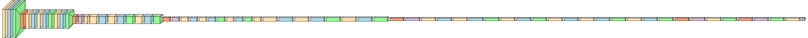
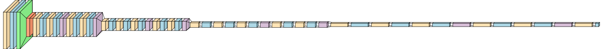
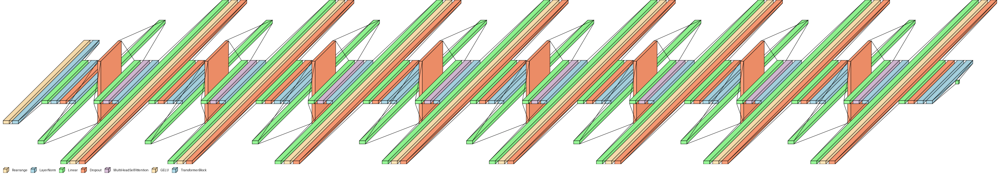

Backbone
Backbone & head architecture
Three scratch models (CNN, ResNet-18, ViT-Small) and four pretrained backbones (ResNet-50/101, ViT-B/L) with lightweight 20-way heads.
Sources: Sections 5–7 of the image notebook; figures from
assets/image.
Scratch
Scratch architectures
Custom CNN, ResNet-18, and ViT-Small equivalents trained from scratch.
CNN-Scratch

Deep CNN with 6 ConvBlocks and skip connections.
🔍 Full Architecture
Total params: 15,726,676 Trainable params: 15,726,676 Forward/backward pass size: 49.78 MB Parameter size: 62.91 MB Estimated Total Size: 113.29 MB ScratchCNN [1, 20] ├─Sequential stem [1, 64, 56, 56] │ └─Conv2d [1, 64, 112, 112] 9,408 params │ └─BatchNorm2d [1, 64, 112, 112] 128 params │ └─ReLU [1, 64, 112, 112] │ └─MaxPool2d [1, 64, 56, 56] ├─Sequential: 6 ConvBlocks [1, 512, 3, 3] │ ├─ConvBlock: 128 channels [1, 128, 28, 28] 230,144 params │ ├─ConvBlock: 256 channels [1, 256, 14, 14] 919,040 params │ ├─ConvBlock: 256 channels (residual) [1, 256, 14, 14] 1,180,672 params │ ├─ConvBlock: 512 channels [1, 512, 7, 7] 3,673,088 params │ ├─ConvBlock: 512 channels (residual) [1, 512, 7, 7] 4,720,640 params │ └─ConvBlock: 512 channels (3×3) [1, 512, 3, 3] 4,720,640 params ├─AdaptiveAvgPool2d [1, 512, 1, 1] └─Sequential head: FC layers [1, 20] └─Flatten [1, 512] └─Linear(512, 512) + ReLU + Dropout(0.4) 262,656 params └─Linear(512, 20) 10,260 params Computational complexity: 2.97 GFLOP
ResNet-Scratch

ResNet-18 with [2,2,2,2] BasicBlocks.
🔍 Full Architecture
Total params: 11,186,772 Trainable params: 11,186,772 Forward/backward pass size: 39.74 MB Parameter size: 44.75 MB Estimated Total Size: 85.09 MB ScratchResNet [1, 20] ├─Sequential stem [1, 64, 56, 56] │ └─Conv2d [1, 64, 112, 112] 9,408 params │ └─BatchNorm2d [1, 64, 112, 112] 128 params │ └─ReLU [1, 64, 112, 112] │ └─MaxPool2d [1, 64, 56, 56] ├─Layer 1 (64 channels, [2,2]) [1, 64, 56, 56] │ ├─BasicBlock: 2×Conv2d(3×3) + BN 73,728 params │ └─BasicBlock: 2×Conv2d(3×3) + BN 73,728 params ├─Layer 2 (128 channels, [2,2]) [1, 128, 28, 28] │ ├─BasicBlock: stride 2 + projection 156,032 params │ └─BasicBlock: 2×Conv2d(3×3) + BN 294,912 params ├─Layer 3 (256 channels, [2,2]) [1, 256, 14, 14] │ ├─BasicBlock: stride 2 + projection 624,160 params │ └─BasicBlock: 2×Conv2d(3×3) + BN 1,179,648 params ├─Layer 4 (512 channels, [2,2]) [1, 512, 7, 7] │ ├─BasicBlock: stride 2 + projection 2,359,296 params │ └─BasicBlock: 2×Conv2d(3×3) + BN 2,359,296 params ├─AdaptiveAvgPool2d [1, 512, 1, 1] └─Linear(512, 20) 10,260 params Computational complexity: 1.81 GFLOP
ViT-Scratch

Vision Transformer with 8 TransformerBlocks.
🔍 Full Architecture
Total params: 14,568,596 Trainable params: 14,568,596 Forward/backward pass size: 56.27 MB Parameter size: 57.97 MB Estimated Total Size: 114.84 MB ScratchViT [1, 20] 76,032 learnable params ├─Sequential: Patch Embedding [1, 196, 384] │ └─Rearrange (16×16 patches) [1, 196, 768] │ └─LayerNorm [1, 196, 768] 1,536 params │ └─Linear(768→384, projection) [1, 196, 384] 295,296 params │ └─LayerNorm [1, 196, 384] 768 params ├─Dropout [1, 197, 384] (includes CLS token) ├─ModuleList: 8 TransformerBlocks [1, 197, 384] │ ├─Block 1: MultiHeadAttn(6 heads, 384 dim) 590,208 params │ │ + FeedForward (1536 MLP) 1,181,568 params │ ├─Block 2: MultiHeadAttn(6 heads, 384 dim) 590,208 params │ │ + FeedForward (1536 MLP) 1,181,568 params │ ├─Block 3–8: [repeated 6 times] 7,029,312 params ├─LayerNorm [1, 197, 384] 768 params └─Linear(384→20, classification head) 7,700 params Computational complexity: 14.49 MFLOP (efficient due to smaller model size)
Pretrained
Pretrained backbones & heads
ResNet-50/101 and ViT-B/L with swapped linear heads, finetuned in two phases.
| Model | Weights | Head replaced | Head size | Params |
|---|---|---|---|---|
| ResNet-50-PT | IMAGENET1K_V2 | fc | Linear(2048→20) | 23.55M |
| ResNet-101-PT | IMAGENET1K_V2 | fc | Linear(2048→20) | 42.54M |
| ViT-B/16-PT | IMAGENET1K_V1 | heads.head | Linear(768→20) | 85.81M |
| ViT-L/16-PT | IMAGENET1K_V1 | heads.head | Linear(1024→20) | 303.32M |
Training
Optimization & schedules
Shared training setup for scratch and finetune runs.
| Parameter | Value |
|---|---|
| Optimizer | AdamW |
| LR (scratch) | 1e-3 |
| LR (finetune) | 1e-4 |
| Weight decay | 1e-4 |
| Scheduler | Cosine annealing |
| Warmup epochs | 3 |
| Label smoothing | 0.1 |
| Gradient clip | max_norm = 1.0 |
| Epochs (scratch) | 30 |
| Epochs (finetune) | 5 |